Free, and yours.
Open source under the MIT license. Read the code, build it yourself, keep it forever.
A little notepad that floats over your work. Press ⌃⇧Space, jot the thought, and click back to what you were doing.
Free and open sourcemacOS 14+ · v__BANANA_VERSION__
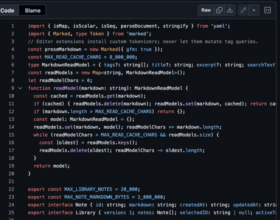
On a call, someone gives you a number to keep. Before you open a notes app, the moment is gone.
Untitled 429.txt
And the ones you did save look like this.
Pin a note over your editor, a doc or a video call. Click back to your work and it fades so you can see what’s under it. Click the note and it’s solid again.
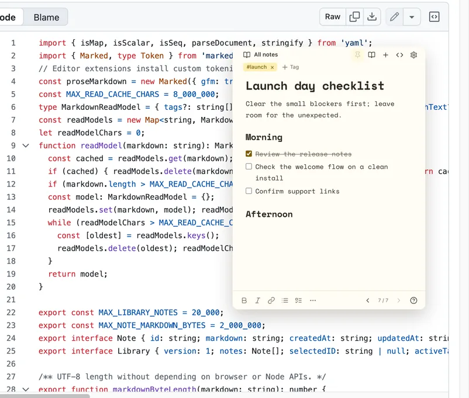
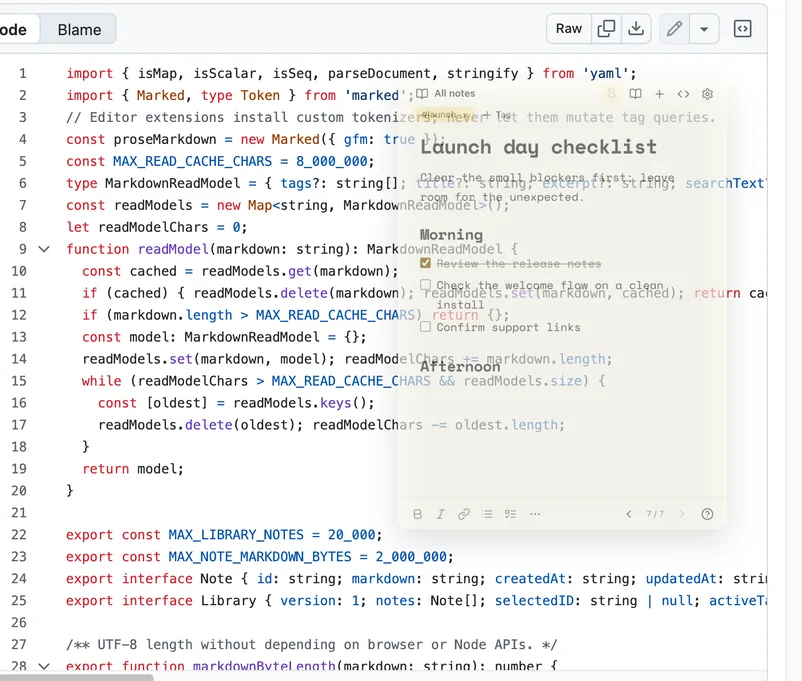
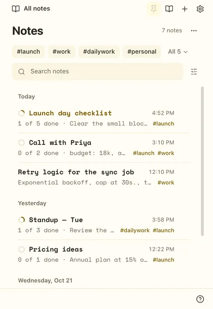
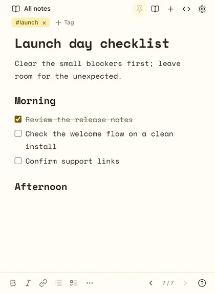
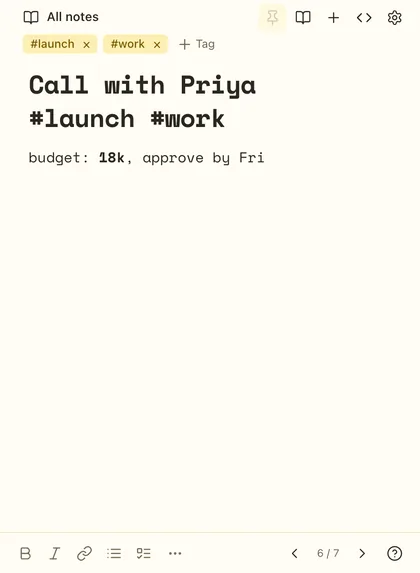
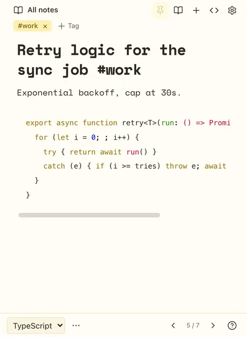
No pile of windows. Every note lives in this one small window. Flip through them like pages, or filter to a tag and only those are left.
Tasks end up scattered across a week of notes. Tag the notes that belong together, click the tag, and every open task is here. Tick one off and the original note updates too.
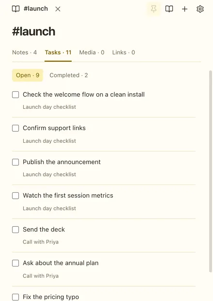
32 themes and six bundled fonts, all offline. The whole app re-skins, window chrome included.
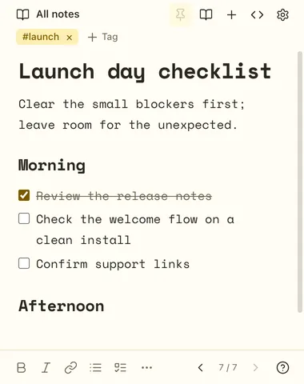
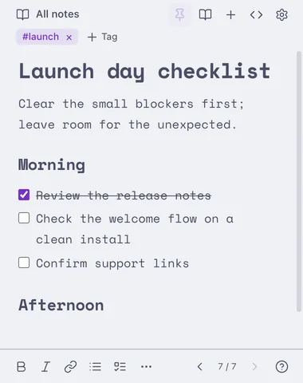
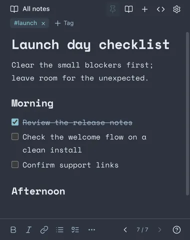
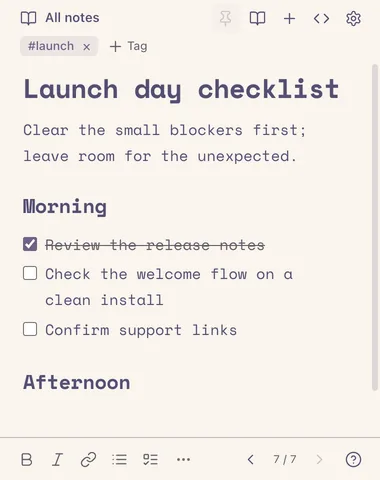
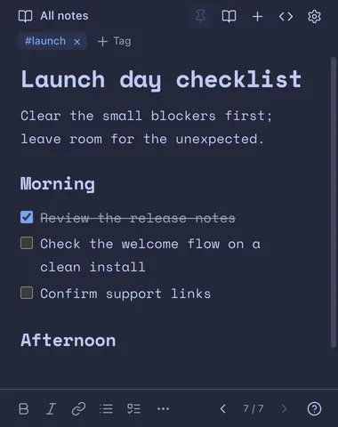
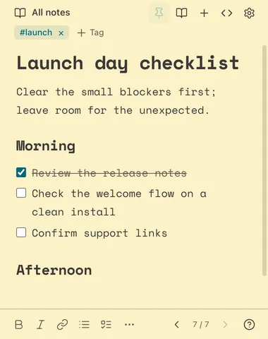
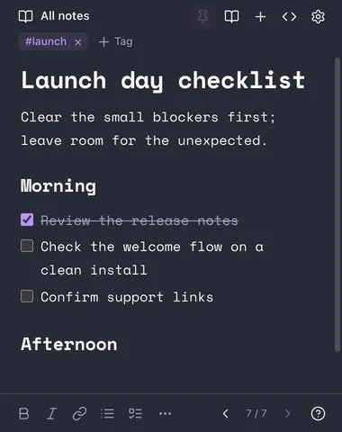
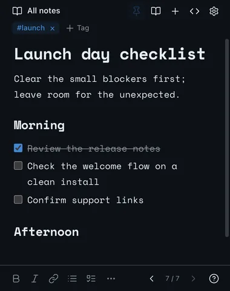
Open source under the MIT license. Read the code, build it yourself, keep it forever.
Nothing to sign up for.
Notes live in one file on your Mac.
No analytics or telemetry in the app.
Search by meaning, on your Mac.
Export every note as .md any time.
Apple silicon and Intel, macOS 14+.
Download it and open it once. It lives in your menu bar, not the Dock.
Press it from any app. Turn on Open at login and it’s always ready.
It saves as you type, then fades until you need it again.